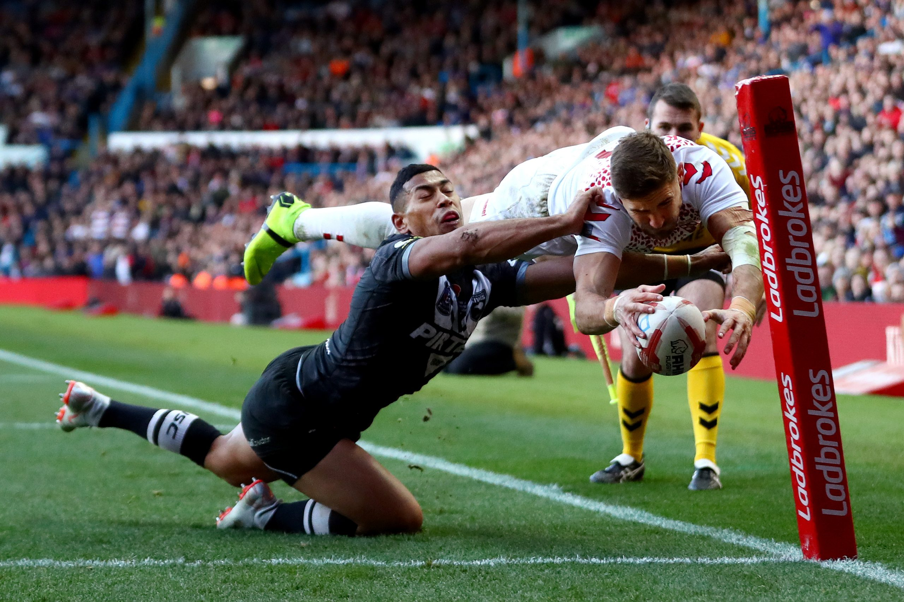
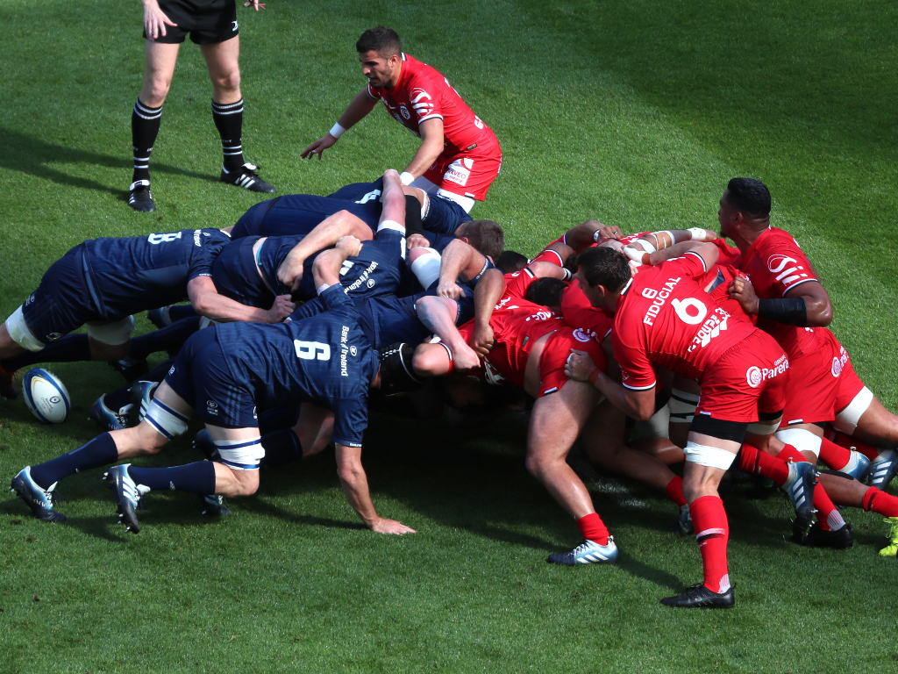

Before we start talking about the basic rules of Rugby, we need to understand and know that there are two ways to play: the first is known as Rugby XV and the other is Rugby Sevens.
Rugby XV
Two teams of 15 players each
play 2 halves of 40 minutes on a 100m x 70m field.
Rugby Sevens
Two teams of 7 players each
play 2 halves of 7 minutes on a 100m x 70m field.
Now, on to the rules!
Rugby Basic Rules
During the game of Rugby the ball can only be passed to the side or backwards, never forwards. Only forward kick is allowed.
Only the athlete who has the ball can be taken down, the action of taking down the opponent is called a tackle, however, contact can only be made from the chest line down.
plays and score
Try: To make a Try, the player needs to pass the opponent's goal line and put the ball on the ground. Each Try is worth 5 points.

Conversion: Always after the try is marked, the team that scored is entitled to a kick to the Hs (Rugby goal). Remembering that in this case the ball is stopped on a support and is worth 2 points. Note: In Sevens mode the kick must be done as a Drop Goal.
Penalty: Works in the same way as Conversion, but only after a serious foul.
Drop Goal: It's a "ready hit" kick, where the ball must bounce before the kick and pass through the H, this kick can be given at any time in the game and is worth 3 points.
dead balls
Line-out: When the ball goes out to the side, two parallel lines are formed and the ball must be thrown between them. The team that catches the ball remains in possession.
Scrum: It is a form of restarting the game, whenever there is a slight infraction, for example, a forward pass. At that moment the team that did not commit the infraction puts the ball in the tunnel to win it back.

Rugby for beginners: a guide to the rules of rugby union below